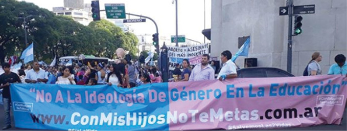

Como se ha visto hasta aquí, las y los actores utilizan las redes sociales como herramientas estratégicas para superar la denunciada “censura” de los medios tradicionales. En ellas, circula contenido que confirma y refuerza el sistema de creencias y valores compartido por las y los actores y brindan datos y argumentaciones elaboradas para dar la denominada batalla cultural.
En este capítulo, se profundiza el análisis en las acciones políticas que tienen lugar en el territorio fuera de las redes sociales, algunas más tradicionales y otras más novedosas: ocupación de la calle en tanto espacio de disputas políticas, producción literaria, difusión de una autorización para que las y los niños no reciban educación sexual integral, lobby parlamentario, recolección de firmas en contra de un proyecto de ley, participación electoral, talleres de formación, denuncias y presentaciones judiciales, entre otras.
El debate por la legalización del aborto dejó una enseñanza contundente para CMHNTM: la necesidad de salir y ganar la calle. Nancy García lo explica así:
Somos millones que están el silencio, se tiene que oír la voz de los millones. Es cierto, hablamos mucho pero hablamos en las redes. Necesitamos salir realmente, necesitamos tomar las calles con volanteadas, charlando con la gente, sentándonos en una plaza y hablando con la gente de la plaza. Es necesario que la gente se entere de lo que está pasando, es muy serio [sic] (Nancy García en CMHNTM, 23/03/2019).
Redes sociales y calle se complementan, se necesitan la una a la otra. Gustavo Geyer define a la movilización callejera como la mejor forma de interpelar a las y los dirigentes políticos y manifestarse por el “sí a la vida”. Para el coordinador de la Marcha por la Vida hay que “hablar un lenguaje que lo entiendan los políticos que es el lenguaje de la calle” (Gustavo Geyer en CMHNTM, 23/03/2019). En crítica a la clase política y la baja representatividad que encuentran en la dirigencia política argentina, llama a “manifestarnos, a reclamar por nuestros derechos porque nadie lo va a hacer por nosotros” (Raúl Magnasco en CMHNTM, 23/03/2019). También reconocen que aún queda trabajo por hacer porque, aunque se sienten admirados y se consideran un indicador en el mundo sobre lo que es defender el derecho a la vida, “hay muchos padres que todavía no saben qué tipo de material se les da a los chicos en el colegio” (Nancy García en CMHNTM, 23/03/2019), con lo que sugiere que el material de la ESI distribuye pornografía, incita a una iniciación temprana de la sexualidad y promueve ideas “antinaturales”.
¿Cómo es esta conquista de la calle? A las movilizaciones que convoca CMHNTM las denominan “familiazos”. Esta etiqueta condensa varios mensajes. Los familiazos no solo refieren a las familias –padres y madres con sus hijos e hijas– que se convocan en las plazas y calles, sino que simbolizan unos supuestos “valores de la familia”: “gente de bien” que se manifiesta pacíficamente, junto a sus niños y niñas por los que luchan, sin interrumpir el tránsito y sin insignias políticas, solo banderas argentinas que cuelgan del cuello o envuelven a los más chicos. La mayoría de los familiazos se realiza durante el fin de semana, porque según sus participantes “son gente de trabajo” y en esos días tienen más tiempo libre para poder movilizarse.

Figura 4.1. Marcha frente al Ministerio de Salud de la Nación. Fuente:
Instagram @conmishijosnotemetas.oficial, 18/12/2020.
Como no fue posible participar de alguna de estas marchas, la observación se realizó a través del material audiovisual difundido en redes sociales (YouTube, Instagram y Facebook) por los propios actores. Las imágenes y videos transmiten jornadas de alegría, un clima relajado y familiar, cantos de canciones populares o religiosas con letras modificadas, jóvenes con tambores, sobresale el color celeste de los pañuelos y vestimentas que se entremezcla con el celeste y blanco de las banderas argentinas. Algunas de ellas tienen la imagen de un feto en el centro reemplazando el sol de la bandera argentina. Los organizadores y líderes de las diferentes organizaciones participantes portan identificaciones (similares a una acreditación) con su nombre y organización a la cual representan, y encabezan la primera línea de la columna sosteniendo banderas de tonos rosas y celestes que cruzan gran parte de la calle. Junto a ellos se ubican los medios alternativos “El Otro Enfoque” y En los Medios no sale con sus habituales transmisiones en vivo y entrevistas a actores relevantes para el colectivo.
Además de carteles artesanales y banderas argentinas, resaltan los pañuelos celestes y globos rosas y celestes, decorando automóviles y escenarios (figura 4.1). Estos últimos también se decoran con banderas de las distintas organizaciones como la blanca y roja de Más Vida o la de la Marcha por la Vida y otras con el logo de “Salvemos las dos vidas”. En cambio, las imágenes religiosas son minoritarias. En las marchas especificas por cuestiones de “defensa de la vida” –típicamente el aborto–, se observan fotografías gigantes de vírgenes o rosarios y cruces enormes, una imagen que recuerda una procesión católica; mientras que cuando las movilizaciones son en contra de la ideología de género, relacionadas a la ley ESI, la religiosidad icónica disminuye.
Las banderas partidarias están ausentes; solo en época electoral se alcanzó a ver, sobre la vereda del Congreso Nacional, alguna mesa de Partido Celeste en busca de adherentes para poder ser inscripto ante la justicia electoral. En la Primera Manifestación Nacional contra la ESI, frente al escenario principal se vio a la bandera del “Frente Patriota Bandera Vecinal”, un partido de extrema derecha con rasgos neonazis. Sin embargo, los principales referentes provida negaron cualquier relación con dicho partido y reafirmaron el rasgo apartidario que caracteriza a las diferentes organizaciones celestes.
En el período estudiado se realizaron dos “Manifestaciones Nacionales” bajo el lema “Educación sexual para prevenir SI, ideología de género para adoctrinar NO”, en octubre y diciembre de 2018. Ambas fueron acompañas por la red de aliados: Más Vida, Marcha por la Vida, Somos Más por la Vida, Estilo de Mujer y algunas organizaciones provinciales como “Rosario te quiero PROVIDA”. Con impronta federal, marcharon en oposición a la reforma de la ley de Educación Sexual Integral en diferentes ciudades del país. También en ese mismo año, el 15 de noviembre, se realizó una Marcha Continental de CMHNTM en oposición a la imposición de la ideología de género en América Latina. La convocatoria tuvo repercusión en varias ciudades de la región lideradas por Christian Rosas desde Lima, Perú (figura 4.2).
Además, se organizaron seis familiazos, menos concurridos que las manifestaciones nacionales y la gran mayoría, concentradas en la CABA, dado que se movilizaron a instituciones públicas ubicadas en la capital nacional: al Congreso Nacional en ocasión de reformas legislativas de la ESI, al Ministerio de Salud Nacional, cuando se actualizaron los protocolos de interrupción legal de embarazo (ILE), y a la Quinta Presidencial de Olivos (localidad muy cercana a la CABA) para reclamar directamente a los presidentes Mauricio Macri (2015-2019) por haber impulsado el debate por el aborto y Alberto Fernández (2019-2023) por el protocolo emitido por su ministro de salud a pocos días de su asunción.
Por otro lado, durante el debate por el aborto en 2018 los referentes y sus equipos con los que comenzaban a formar CMHNTM, se hicieron presentes en las movilizaciones de agosto, luego de la derrota en diputados. Vale destacar que en sus primeras apariciones públicas, Mercado expuso como referente del colectivo, pero la bandera identificatoria no fue la celeste y rosa actual, como la del movimiento original nacido en Perú, sino que fue naranja y negra con una línea más pequeña con los colores de la bandera argentina. En ella se podía leer la frase “los hijos son de los padres no del Estado”. 1 El color naranja había sido adoptado por los grupos provida y profamilia que se oponían a la sanción de la ley de matrimonio igualitario en 2010. El mismo es el resultado de la conjunción de la bandera papal (blanca y amarilla) y la sangre de los bebés “asesinados por aborto” (Felitti, 2011).
También han participado activamente de las Marchas por la Vida acompañando la organización y publicitación. Por ejemplo, para la Marcha del 2019, en redes sociales se realizó un conteo de los días que faltaban hasta la fecha de la movilización, y luego, durante la jornada, se instaló un búnker periodístico con gigantografías de los logos que identifican a las organizaciones convocantes y transmisiones en vivo por YouTube conducidas por Néstor Mercado y Nancy García. Por su micrófonos pasaron los principales referentes “provida y profamilia”: Gustavo Geyer de la Marcha, Elías Badalassi de Abogados por la Vida, María de los Ángeles Mainardi del Frente Federal Familia y Vida, Evelyn Rodríguez impulsora del 0800 para embarazo inesperado, la ex candidata Cynthia Hotton, entre tantos otros.
Otras acciones directas desplegadas en la calle encabezadas por las coordinadoras nacionales –según lo relatado en varias ocasiones por Nancy García– son las volanteadas, las pintadas de murales, las salidas a plazas o parques en búsqueda de vecinos para contarles, cara a cara, su lectura de la realidad y propuesta de militancia. Por ejemplo, mientras el Congreso nacional debatía una reforma a la Ley ESI en septiembre de 2018, en ciudades grandes donde CMHNTM tiene una fuerte presencia como en Rosario o Córdoba capital se llevó adelante una campaña en la vía pública con gigantografías que explicaron la oposición a la reforma. A este conjunto de acciones desplegadas desde su coordinación, Nancy durante la Marcha por la Vida (en CMHNTM, 23/03/2019) las resumió así: “La gente se cansó del engaño de los políticos, es necesario militar, llegar a la gente”.
El año 2019 estuvo atravesado por el caso del Dr. Leandro Rodríguez Lastra, el ginecólogo condenado por haber negado un aborto no punible a una adolescente en la provincia de Río Negro. El hecho ocurrió en 2017, cuando una joven con un embarazo producto de una violación llegó con una infección generalizada tras un aborto clandestino al hospital donde Rodríguez Lastra ejercía como Jefe del servicio de Ginecología y Obstetricia, y este decidió estabilizarla y no proseguir con el aborto. Según su relato, la mujer aceptó continuar con el embarazo para, posteriormente, dar en adopción al niño o niña. Tiempo más tarde, la diputada provincial Marta Milesi, a favor del aborto legal y promotora del protocolo ILE en la provincia, denunció al médico por incumplimiento de sus deberes como funcionario público.2 El acusado vistiendo su guardapolvo blanco hizo pública la denuncia en la Primera Manifestación Nacional de CMHMTN del 28 de octubre de 2018.
Finalmente, en mayo de 2019 comenzó el juicio contra Lastra al que el movimiento provida, rápidamente, definió como una “injusticia insostenible por el lobby abortista [demostrando que al] lobby abortista no le interesan las mujeres” (Batallán, 2020: 229-230). Sin embargo, el juez encontró culpable al médico por haber incumplido su deber de brindar información a la joven sobre sus derechos y del tratamiento que recibiría para interrumpir el proceso de aborto con el que llegó al hospital; además de haberle pedido estudios “psiquiátricos” como requisito para acceder al aborto. Pero además, la fiscalía resaltó que desde 2016 –cuando el Dr. Rodríguez Lastra comenzó a ejercer en la provincia rionegrina– tenía ocho sumarios por denuncias de pacientes y enfermeras.
El día en que comenzó el juicio, los activistas celestes instalaron en la puerta del tribunal un gazebo con velas, una estatuilla de una virgen, una bandera argentina, una biblia y un altar (figura 4.3). En CABA hubo movilizaciones a la Casa de Río Negro, y Juventud Provida emitió un comunicado de apoyo al acusado que fue replicado en las redes sociales de las diferentes organizaciones provida. CMHNTM escribió en Instagram:
GENTILEZA La red nacional de Jóvenes - JUVENTUD PROVIDA ARGENTINA, nos unimos en apoyo al Dr. Rodríguez Lastra, el cual, salvo dos vidas la del niño y la de la mujer negándose a realizar un aborto cuando la madre corría riesgo por su vida. Este hecho trasciende más allá de un juicio, Lastra será juzgado por hacer uso de su libertad de conciencia como profesional. En este contexto los jóvenes pedimos vivir en un país con libertad de conciencia y que nadie tenga que sufrir consecuencias por salvar dos vidas! #somosmuchos #somosmayoria #juventud #universitarios #noaladoctrinamiento #somoslaresistencia #AbortoNoEsNiUnaMenos #NoAlAborto #SIalaVIDA #SalvemosLas2Vidas #CuidemosLasDosVidas #PorLasDosVidas #MentiraVerde #ArgentinaPorLaVida #MarchaPorLaVida #Provida #UnidadProvida #AbortoLegalMataIgual #Argentina #StopAbortion #bastadementiras #valetodavida #Conmishijosnotemetas #cmhnm #generacionprovida (@conmishijonotemetas.oficial, 4/05/2019).
Pocos días después, la misma cuenta escribió junto a una foto durante el juicio donde se muestra a Rodríguez Lastra en el centro de la sala siendo “atacado” por la justicia, el siguiente texto “A donde hemos llegado, Cómo puede ser? Que nos pasó? #SalvarVidasNoEsDelito #justicia. Un Médico a juicio por salvar las dos vidas!!! El futuro depende de nosotros!!!” (@conmishijonotemetas.oficial, 13/05/2019). Para el movimiento, el juicio era un caso testigo para demostrar la persecución que se sufría por demostrar que “Salvar las 2 vidas era posible” (Batallán, 2020: 225).
Siguiendo con su campaña de apoyo, CMHNTM organizó una marcha para el 25 de mayo frente al Congreso Nacional donde se instaló un escenario y Mercado afirmó que estaban ahí para demostrar lo siguiente: “Somos millones, que queremos unidad [de los celeste] y que iremos a todo acto por la vida y por la familia” (Mercado en CMHNTM, 26/5/19). No obstante, el juicio avanzó y, en ambas instancias en las que fue juzgado, fue confirmada su condena de un año y dos meses de prisión en suspenso y dos años y cuatro meses de inhabilitación de la matrícula por haber incumplido sus deberes de funcionario público. Sus abogados defensores fueron Damián Torres, abogado del gobernador provincial y apoderado del partido oficialista, y Diego Breide, secretario de Hacienda de Bariloche (ciudad de Río Negro) y organizador de la Marcha por la Vida en la provincia.
Su defensa se fundamentaba en que, por el avance del embarazo cuando la joven llegó al hospital, continuar con el aborto hubiera implicado riesgo de vida a la madre y al feto, ya que aún no estaba lo suficientemente desarrollado como para llevar una vida extrauterina. De esta forma, para el médico, lo mejor era continuar con el embarazo, que la joven pariera un bebé prematuro (de 35 semanas) para darlo en adopción –aun cuando estas prácticas sumamente violentas para un cuerpo gestante– sin informarle adecuadamente sobre su derecho a una interrupción no punible por la violación sufrida.
El caso alcanzó repercusión mediática a nivel nacional, gracias a que el acusado dio testimonio en los canales televisivos de prime time, asistió a las marchas a su favor en diferentes ciudades del país e incluso tuvo una breve experiencia política al presentarse como precandidato a diputado nacional por la CABA por el Partido Demócrata Cristiano junto a Gustavo Geyer, pero luego el partido no compitió.
Por dichas apariciones públicas, el fiscal solicitó al juez que se le pusiera lo que se conoce como “bozal legal” para proteger a la víctima y al interés superior del niño. Esta medida fue muy criticada por quienes apoyaron a Lastra y denunciaron que se trató de un artilugio abortista para defender una injusticia, “de modo que los que habían comenzado un juicio porque Rodríguez Lastra no había asesinado al bebé eran los mismos que con total hipocresía abogaban preocupación por el niño, solamente para seguir manteniendo sus bajezas fuera de la escena pública” (Batallán, 2020: 229).
Aun así, Rodríguez Lastra continua con su defensa por vías judiciales y mediáticas, participando en las diferentes marchas en contra del aborto, como las que tuvieron lugar a fines del 2019 por la actualización del protocolo de aborto no punible y con publicaciones provocadoras en sus redes sociales. Por ejemplo, a poco tiempo de haber confirmado su condena y en contexto de cuarentena por el COVID-19, tuiteó una foto con la frase “si en tiempos de coronavirus aplaudimos a los médicos por salvar vidas, ¿por qué se condena cuando quiero salvar la vida de un inocente en gestación? #SalvarVidasNoEsDelito” (comunicación personal, @LeandroRLok, 2/04/2020).3 La foto se viralizó y fue replicada por otros profesionales de la salud provida que subieron a sus redes una foto con un cartel con la frase propuesta por Rodríguez Lastra.
El activismo provida y profamilia no permaneció fuera del Congreso Nacional, en las calles, sino que logró ingresar al recinto y recorrer sus pasillos, porque según explica uno de los voceros de CMHNTM-Perú, el trabajo de incidencia más importante tiene que ser en el parlamento porque el presidente refrenda las leyes pero son los congresistas quienes las hacen, quienes deciden.4
Como otros grupos de interés acercan sus reclamos y peticiones a las y los legisladores, mediante campañas coordinadas de mailing (envío de emails), envío de cartas y otros símbolos como pañuelos celestes o “bebitos” de plástico como los que suele repartir Mariana Rodríguez Varela. Este tipo de acciones fue particularmente intenso en el proceso de debate del proyecto de aborto en el que las y los legisladores recibían miles de mails, mensajes de texto y eran añadidos a varios grupos de WhatsApp en simultáneo, mientras puertas y teléfonos sonaban desde temprano. Además, representantes de las diferentes organizaciones celestes participaron de las audiencias públicas, en la Cámara de Diputados y en el Senado de la Nación, que se realizaron antes del debate en el recinto del proyecto de IVE.
Por otro lado, CMHNTM junto a la asociación de Abogados provida, recolectaron firmas como avales de un pedido formal, presentado a las y los diputados y senadores nacionales, para que no reformaran la ley de Educación Sexual Integral en los años 2018 y 2019.
En febrero del año 2019, a pocos meses de haberse realizado el debate por la legalización del aborto, un grupo de abogados pertenecientes la Comisión Federal de Abogados Pro Vida, presentaron una denuncia ante el INADI contra el INADI.5 La denuncia fue presentada por los abogados Carlos Traboulsi y María Alejandra Muchart (ambos autoridades del Partido Demócrata Cristiano CABA) y posteriormente ampliada por su vocero nacional, el evangelista Elías Badalassi. El motivo de la presentación fue la percepción de discriminación hacia “los provida y el niño por nacer” a causa de la colocación de pañuelos verdes (símbolo de los sectores a favor de la legalización del aborto) en las ventanas del edificio del INADI ubicado en el centro porteño. En un entrevista a Badalassi en En los Medios no sale (8/02/2019) explicó que, al colgar los pañuelos verdes, el instituto “realizó un acto discriminatorio hacia los provida al tomar parte en el asunto, ya que por su propia creación como instituto anti discriminación no puede avalar la discriminación de las personas provida ni de la persona por nacer”.
La presentación estuvo acompañada de un “pañuelazo celeste” en la puerta del edificio con carteles alusivos al rechazo de los pañuelos verdes y al pedido de que se los retire; y de la entrega –unos meses más tarde– de más de quince mil firmas, recolectadas en la plataforma CitizenGo, ante el Ministerio de Justicia y Derechos Humanos. En la conferencia realizada para presentar el documento se solicitó lo siguiente: “Se retiren las banderas y pañuelos verdes del INADI, se garantice la neutralidad ideológica del organismo y se deje de hacer apología del delito”. La directora de campañas de CitizenGo Argentina, Silvina Spataro, explicó que en la reunión se “manifestó la necesidad de adoptar medidas para evitar expresiones que atenten contra las diversas concepciones religiosas e ideológicas, en particular, cuando estas se exhiben en lugares públicos, como el INADI”.
El “pañuelazo” se repitió en febrero del 2020 para reiterar el pedido a la nueva gestión, pero, en esta oportunidad se presentaron dos peticiones, una para que se retire el pañuelo verde –Magnasco, de Más Vida, lo llamó “el trapo verde”– y otra para que, en caso de no se lo retirara, se incluya al pañuelo celeste. Como en ocasiones previas, el “pañuelazo” fue acompañado por CMHNTM, Más Vida y otras organizaciones próvida (figura 4.4).
Las manifestaciones fueron una nueva oportunidad para reforzar y visibilizar dos de los elementos identificados en los capítulos anteriores: la revolución de los jóvenes provida como un nuevo grupo discriminado, y la distinción entre un buen y un mal feminismo. La siguiente fotografía y los comentarios en el portal web de noticias en donde se publicó muestran a un grupo de mujeres jóvenes con sus pañuelos celestes representando al “verdadero feminismo revolucionario” y denunciando al feminismo violento, que discrimina e impone, incluso, a otras mujeres, tal como lo indica el cartel que sostiene Guadalupe Batallán (figura 4.5, abajo a la derecha, y figura 4.6).
Luego de la presentación contra el INADI, se llevaron a cabo otras acciones del orden judicial, un “recurso de queja” ante la Defensoría del Pueblo de la Nación6 para que intervenga contra el proyecto de reforma del Código Penal; y un recurso jerárquico para impedir la designación de Marisa Graham como defensora de niños, niñas y adolescentes.
Para el sector próvida, el proyecto de reforma del Código Penal fue una múltiple provocación, dado que no solo se presentó en el día del niño por nacer (25 de marzo) sino que, según su interpretación, ampliaba las causales para la interrupción legal del embarazo en una clara disposición del gobierno nacional a legalizar el aborto a pesar del rechazo en la Cámara de Senadores y su intención de introducir la ideología de género. El sector pro legalización del aborto coincidió en el rechazo al proyecto pero en sentido opuesto al recurso presentado por los provida. Para estos grupos “verdes” el proyecto restringe derechos sexuales y reproductivos de los cuerpos gestantes.
La presentación del 4 de abril de 2019 fue encabezada por Más Vida y acompañada por varias organizaciones provida, como CMHNTM, Somos Todo Vida, Marcha por la Vida, Juventud con una Misión (JUCUM), entre otras. Durante la jornada se impulsó el hashtag #VivirNoEsDelito ya que, según Ayelen Alancay de Más Vida, “en una reforma del código penal no debería tocarse el tema de la vida, la vida como un derecho humano me parece que no tiene que debatirse dentro de un código penal donde se tipifican conductas delictivas” (CMHNTM, 6/04/2019).
Por la noche de ese 4 de abril, Médicos y Abogados por la Vida y el sitio www.cuidarlavida.org organizaron un taller titulado Todo lo que esconde el plan de reforma del Código Penal en materia de aborto. La convocatoria tuvo lugar en el Colegio San Pablo ubicado en el barrio porteño de Recoleta, un sitio donde frecuentemente se realizan actividades provida como la presentación de libros y charlas. En los diferentes paneles participaron, además de médicos y abogados provida, representantes de Jóvenes Provida y el conocido periodista, Mariano Obarrio, de Comunicadores por la Vida.
Por otra parte, la designación de Graham como defensora de niños, niñas y adolescentes generó inconformidad en el sector provida por su trayectoria de militancia a favor del aborto legal y una declaración luego de ser elegida, sobre su disposición a defender a todos los niños y niñas “de aquellos embarazos que quieran llegar a término” (La Política Online, 2019). La defensoría de la niñez fue creada en 2005 por la ley 26.061 de Protección Integral de los Derechos de los Niños pero nunca se había designado a su titular hasta 2020, cuando ambas Cámaras del Congreso Nacional aprobaron el pliego de Marisa Graham.7
El movimiento provida tempranamente manifestó su descontento por la conformación de la comisión bicameral por tener mayoría de miembros a favor de la legalización del aborto. A partir de allí, se presentaron diferentes recursos judiciales para impugnar el examen por irregularidades y descartar a los postulantes provida, y luego por la designación de una candidata que “discrimina y no defendería a los más vulnerables” (Raúl Magnasco, 27/02/2020).
Primero, la fundación Mas Vida, de Magnasco y Alancay, presentó un recurso de amparo para pedir la impugnación del nombramiento, y luego, desde el partido Demócrata Cristiano de Buenos Aires, dirigido por Carlos Traboulsi y María Alejandra Muchart, miembros de la Comisión Federal de Abogados Pro Vida, se presentó un recurso jerárquico al Congreso de la Nación para que la propuesta quede sin efecto. Aunque el reclamo principal era por su apoyo al aborto, también se impugnó su examen y los plazos con los que se expidieron las Cámaras por creer que abusaron de lo establecido en el reglamento de la comisión bicameral.
Desde CMHNTM se acompañaron las instancias judiciales y se promovió desde las redes sociales a “enviar tuits y mails a los legisladores” ante el reconocimiento de que “o el movimiento provida se politiza, es decir, toma conciencia política de sí, o perece frente a los genocidas. Basta de moralismos naif: esto es política” (comunicación personal, @CMHNTM.ok, 29/02/2020).8 Para sus militantes, fue una traición más del gobierno de Macri, que se “vendió” ante la ideología de género. Así lo expresaron dos cibernautas en una noticia sobre la designación de Graham (figura 4.7):
@ Franz “¡Ja, ja! pueden cambiar los gobiernos, pero lo esencial nunca cambia: la contracultura progre, la promoción de la homosexualidad, la inquisición del INADI, el abortismo, los métodos marxistas en la educación (destinados a que no aprendas una mierda), la trata de mujeres (sobre la cual las mujeres “progresistas” no dicen nada), la televisión vomitiva (calificada como “pornográfica” por el gran actor Gérard Depardieu en su última visita a la argentina). En fin, sobre esto estuvieron y están de acuerdo todos, desde Alfonsín hasta Macri, pasando por Menem, De la Rúa y el matrimonio Kirchner” (٣٠/٠٤/٢٠١٩).9
@Yoargento “No olvidaremos la traición de Mauricio Macri a su electorado. Siguen dando cargos a la izquierda verde. traidor!! los celestes militamos, militaremos y no olvidamos” (30/04/2019).10
@Totito “Sus declaraciones son de una temeridad inusitada !!! el artículo 6º de la convención de los derechos del niño expresa que los países deben tomar todas las medidas para asegurar el derecho intrínseco a la vida de todos los niños !!! esta mujer está violentando principios elementales de derechos humanos !!! Graham no puede representar a los niños, si a la vez promueve el exterminio de una parte de ellos !!! debería apartar sus pezuñas de las inocentes vidas que están en juego !!!” (30/04/2019).11
Cuando se intentó reformar la Ley ESI en octubre de 2018, CMHNTM realizó su primera aparición fuerte como organización en la Primera Manifestación Nacional del 28 de octubre. En este contexto y con el objetivo de involucrar y organizar a los padres, se lanzó la campaña “No autorizo”, en la que se promovía que los padres o tutores legales presenten en los establecimientos escolares una carta que manifieste explícitamente su oposición a que sus hijos reciban educación sexual integral.
La carta (ver Anexo I), elaborada en colaboración con la Comisión Federal de Abogados Pro Vida, invoca el derecho de los padres y de la familia a darle a los hijos una educación de acuerdo con sus valores, tradiciones y convicciones ante la intromisión del Estado en la educación. En esta, se utiliza a la Ley de Educación Nacional, el Código Civil y Comercial de la Nación y a la Convención Americana de Derechos Humanos (CADH) para justificar “el legítimo ejercicio de los derechos inherentes a la responsabilidad parental”. Tal como se explica en su sitio web, esta acción se enmarca en la promoción del respeto a los padres y su magisterio irreemplazable sobre los hijos, porque como cita la CADH en su Art. 17: “La familia es el elemento natural y fundamental de la Sociedad y debe ser protegida por la sociedad y el Estado”.12
Sin embargo, esta no fue la única carta de expresión de rechazo que se promovió. El pastor evangelista y vocero de Abogados Pro Vida Elías Badalassi elaboró una serie de documentos disponibles en su perfil de la red “Academia.edu” para expresar la objeción de conciencia respecto de la ESI, del aborto y de la capacitación obligatoria en materia de género y violencia de género (más conocida como Ley Micaela).
A la carta destinada a los padres y tutores que rechazan la ESI se le suman dos más, otra para padres y una para docentes. La primera se propone como contrarrespuesta en caso de que la institución educativa responda negativamente a la primera carta enviada y profundiza los argumentos legales y los instrumentos de protección de derechos humanos invocados, a la vez que ratifica la no autorización en un claro y fuerte mensaje al establecimiento educativo, casi amenazándolos:
Estamos asesorados legalmente sobre lo que estamos haciendo y dejamos sentado de que con su respuesta ustedes se hacen responsables civil, administrativa y penalmente tanto de soslayar nuestra NEGATIVA EXPRESA RATIFICADA EN ESTE ACTO [sic] (y en la nota anterior) al dictado de dichas clases, como de cualquier tipo de afectación a la salud psíquica o social de nuestro hijo que se derive de las clases impartidas por el colegio que ustedes presiden y dirigen (Contra carta nota respuesta tema ESI en Academia.edu).13
La otra carta, mucho más extensa y fundamentada, está destinada a las y los docentes para que manifiesten su objeción de conciencia en cuanto incluir contenidos de educación sexual integral en la planificación de la currícula, alegando que,
no solo porque la incumbencia profesional no tiene nada que ver con lo que se pretende enseñar en la escuela, sino porque ello implicaría trasmitir una formación moral contradictoria con mis convicciones y, casi con seguridad con la de los padres de los alumnos, responsables primarios y exclusivos de su educación a los que ni siquiera se les habría consultado si admiten la intromisión del colegio en el marco de su exclusiva obligación como padres (Carta objeción de conciencia docentes ESI en Academia.edu).14
La oposición a la ESI al interior de las escuelas no se limita a las cartas presentadas por padres y docentes. Otra práctica recurrente es la irrupción de grupos de madres y padres en los colegios para evitar que se dicten los contenido de la ESI, ya que consideran que se trata de “material pornográfico, que sexualizan a los niños, les enseñan a masturbarse y les confunden su sexualidad, además de que están impartidos por personas que no tienen asumida su sexualidad [en referencia a las personas trans]”. Referentes de CMHNTM aseguran que sin ESI con valores, sanitaria y que fomente la familia, las y los niños tienen experiencias sexuales a temprana edad y que por eso, a partir del 2006 hay una “proliferación de niñas embarazadas”. E incluso, cuando se reconoce que esas niñas embarazadas han sufrido una violación –muchas veces en el ámbito intrafamiliar–, se adjudica la conducta del violador a la falta de educación en valores y a la destrucción de la familia como producto de la injerencia de la ideología de género.15
Por último, Badalassi proporciona una carta para que los médicos expresen su derecho a la objeción de conciencia respecto del aborto legal, fundamentada en el derecho a la libertad religiosa, de pensamiento, de trabajo y de no discriminación, ya que, según los protocolos de ILE, los profesionales de la salud que manifiesten ser objetores de conciencia deberán notificarlo previamente a las autoridades de los establecimientos de salud.
Al respecto, el protocolo de aborto no punible del 2019 en cumplimiento del fallo FAL (CSJN, 2012) establece que el ejercicio del derecho a la objeción de conciencia respecto de una práctica ILE no puede derivar en demoras que comprometan la salud ni el ejercicio de los derechos de la paciente. Asimismo, no puede ejercerse para las prácticas complementarias que garanticen la atención integral (como ecografías) ni cuando no existiera otra u otro profesional disponible para realizar la práctica ni cuando se trate de una situación de emergencia. La objeción como resguardo de convicciones íntimas y morales de la persona no puede interferir en el derecho al acceso a la información ni autonomía de la persona gestante, por lo que debe brindarle información y derivación adecuada a otro profesional.
Recientemente, se incorporó una nueva carta para manifestar el derecho a la objeción de conciencia respecto de la capacitación obligatoria en género y violencia de género para quienes desempeñan una función pública en los poderes Ejecutivo, Legislativo y Judicial de la Nación en el marco de la ley Micaela (Ley 27.499). La justificación viene del lado de la religión y la oposición a capacitarse en la materia dado que sobrepasaría la problemática de la violencia de género para adoctrinar sobre ideología de género y aborto:
[…] afecta mi conciencia como ser humano y cristiano que considero que toda persona nace con un sexo definido (y no asignado) tal cual lo menciona la Biblia en el Libro de Génesis, capítulo 1 versículo 27, que dice: “Y creó Dios al hombre a su imagen, a imagen de Dios lo creó; varón y hembra los creó” (Varón y Hembra, solo dos sexos). Por consecuencia, una capacitación en género en la que se enseña que somos conforme “nos auto percibimos”, que “autoconstruimos nuestra sexualidad sin importar lo biológico”, lo que según mis convicciones equivale a decir que “somos dioses y nos hacemos a nosotros mismos sin ningún tipo de límite”, violenta mi conciencia, violenta mi religión, por cuanto considero que es una falta grave e injustificable que implica lisa y llanamente negar a Dios. Es una afrenta a nuestro Creador, de la que no puedo participar (Carta objeción de conciencia contra la ley Micaela, en Academia.edu).16
El escenario electoral del 2019 permitió al movimiento exponer su crítica hacia la política y presentar su proyecto político para cambiar la Argentina. Convencidos de la necesidad de recuperar los espacios de poder y de sanción de las leyes –una advertencia que los jóvenes plantean como una de sus principales banderas–, y de que la clase dirigente, partidos políticos incluidos, los ha desilusionado, la respuesta solo puede ser el armado de un frente de unidad y puramente celeste. Confiados de que su capital social y su capacidad de movilización pueden devenir poderosas herramientas políticas, aspiraban a ocupar 30 escaños para diputados, lo que según ellos, los habilitaría a pedir la vicepresidencia de la Cámara.
Néstor Mercado, convencido promotor de un frente de unidad, fue la principal voz en denunciar y criticar aquellos actores u organizaciones provida que aceptaron ser parte de frentes no puros, provocando la división: “Este movimiento que somos nosotros, los celestes, el movimiento de ma[yor] capacidad de lobby político y democrático”. Y agregó: “Cualquier político estaría enloquecido con tener esta capacidad de movilización. Hay que tener mucha sabiduría para saber que vamos a hacer con esto. […] Asique los que se sientan con el gobierno tienen que responder a lo que la gente les encargó, a nada más, no pueden hablar de otra cosa” (Mercado en su saludo de fin de año 2018).17
El vocero de CMHNTM propuso una cumbre política con los referentes de todas las organizaciones afines en la que cada una aportara cuadros, militancia, estructuras, redes, para, guiados por Dios, formar un partido celeste. Elías Badalassi, el pastor y representante de Abogados por la Vida, coincide con Mercado y sostiene: “Hace unos años se decía que no se podía trabajar sin la pata peronista, yo creo que hoy no van a poder trabajar sin la pata evangélica, sin la pata provida, sin la católica también, por supuesto” (CMHNTM; 25/03/2019).
Experiencias similares inspiraban la propuesta, algunas de larga data como La Red Federal de Familia (creada en 2010 en contra del matrimonio igualitario), y otras más cercanas como el Frente Federal Familia y Vida (FFFV), creado luego del debate por la legalización del aborto. Una impulsora de ambos espacios, María de los Ángeles Mainardi, explica que el FFFV nace postaborto, ante la necesidad de actuar políticamente, de darles apoyo a los legisladores que arriesgaron su vida por la vida, de denunciar a los legisladores promuerte y continuar promoviendo nuevos espacios provida. CMHNTM no forma parte institucionalmente de estos espacios pero los apoya y publicita en sus expresiones públicas; además, varios de sus de aliados, como Marcha por la Vida, Médicos por la Vida, Frente Joven y Más Vida, entre otros, fueron fundadores del FFFV.
Las declaraciones de Mercado y Badalassi y los armados políticos liderados por Mainardi dan cuenta del entorno partidario18 provida en el que se instalaron una serie de propuestas partidarias y candidatos/as celestes postdebate del aborto. Gabriel Vommaro propone la noción de ‘mundos sociales de pertenencia’ para abordar los modos en que el background de los miembros de un partido influye en la organización política, formatos de acción y de rituales y jerarquías morales que ponen en práctica en su actividad. Los mundos sociales de pertenencia cumplen diferentes roles, son anclajes sociales que proveen marcos de sentido, condicionamientos y recursos para la acción de los miembros de un partido; dotan al partido de criterios para organizar la vida partidaria; y a nivel de la acción individual, estas formas de actuar sedimentadas, como las legitimidades morales establecidas, permiten a los actores político-partidarios definir escenas y modos de conducirse en ellas (Vommaro, 2017), como las que analizaremos a continuación plasmadas en los discursos y las presentaciones públicas.
Esta nueva clase política, nutrida del movimiento en la calle y alzando la voz de “la gente defraudada por los gobernantes”, se propone transformar la Argentina defendiendo los valores nacionales, las libertades básicas, la vida desde la concepción y la familia. Su lema legitimante es que “la causa es más importante que un cargo político”, y con inspiración bíblica agrega que “para tener un cargo hay que tener una carga”, es decir, se construye un discurso que rechaza la corrupción en contra de los intereses de la sociedad y el oportunismo político en busca del voto celeste pero que luego no lo representa.
Según Mercado, su único objetivo tiene que ser eliminar la ideología de género de la República Argentina y que la familia sea declarada razón o política de Estado; si se fortalece a la familia se fortalece el magisterio del hogar; por ejemplo propone que “si se ayuda a la familia mediante mayores ingresos, los mamás y papás podrán estar más tranquilos y disfrutar más tiempo con sus hijos, formando futuros ciudadanos responsables y con valores”.
La necesidad de un único frente provida se nutre, además de la causa, de la crítica al sistema electoral vigente, y en específico a la boleta partidaria. Las listas sábanas, y el sistema de reparto de bancas “mezcla” a los candidatos celestes con los verdes, lo que aumenta el riesgo de no alcanzar un lugar en el Congreso. Un partido o frente totalmente conformado por celestes aseguraría la no dispersión del voto provida y, en consecuencia, se conseguirían más bancas. Así es que, en el año de elecciones presidenciales, aprovecharon cada marcha o evento público para alertar sobre el efecto de las listas sábanas, promover que los ciudadanos se informen sobre la postura de cada candidato respecto de “la vida” e insistir en la necesidad de presentarse a elecciones en un frente de unidad celeste.
Si bien el frente electoral de unidad celeste no pudo conformarse, sí existieron algunas experiencias que participaron de la contienda electoral. La exdiputada y diplomática ante la OEA, Cynthia Hotton, relanzó el Partido Valores para mi País diez años después de su creación para luego integrar la fórmula presidencial con el excombatiente de Malvinas Juan José Gómez Centurión como candidata a vicepresidenta del Frente NOS, un espacio provida, liberal y cercano al evangelismo. Sus propuestas principales fueron rescatar a la Argentina del fracaso de los valores de la clase dirigente, defender la vida y la patria. Lograron alrededor de 450.000 votos, lo que representa el 1,7% del total de votos válidos. En otras categorías y a nivel subnacional referentes de la Red de Familias y el FFFV se presentaron como candidatos de este frente.
Por su parte, Mainardi del FFFV y presidenta de la ONG Estilo de Mujer,19 compitió como candidata a Diputada Nacional por el Partido Demócrata Cristiano y, por el mismo partido, Gustavo Geyer se presentó como precandidato a comunero en la CABA, aunque finalmente el partido no participó de las elecciones porteñas.
Finalmente, los líderes de Más Vida, junto a varias organizaciones provida, impulsaron el Partido Celeste, que se define como “el primer partido político que nace con el objetivo principal de impulsar la promoción y defensa de la vida humana desde la concepción y hasta la muerte natural”.20 La propuesta del Partido Celeste es un claro ejemplo de la relevancia que adquiere en los orígenes la porosidad de las fronteras entre los partidos políticos y su entorno social, en tanto y en cuanto se apoya en redes relacionales que se entrecruzan, se sustentan en valores e intereses compartidos y se alimentan de interacciones en lugares de sociabilidad más o menos formales. Estas redes, además, funcionan como espacio para reclutar militantes y dirigentes, y como espacio de construcción de complicidades culturales basadas en “valores o intereses compartidos” fundados en una sociabilidad común (Vommaro, 2017).
Ante el diagnóstico de una crisis de representatividad, proponen que las temáticas no relacionadas directamente con el “Derecho a la Vida” –Venchiarutti, abogado de Más Vida y secretario general del Partido, los define como “temas menores”– sean sometidas a consulta popular a través de la plataforma web del partido. Este mecanismo de democracia directa es concebido como la única forma de cumplir fielmente el mandato de la ciudadanía.
El partido fue presentado en varios municipios de la provincia de Buenos Aires, pero no alcanzó los avales necesarios para poder inscribirse en la justicia electoral. Como sostiene Vommaro: “El ingreso al mundo político supone la entrada a otro campo de lucha, en el que las posiciones de los actores no se desprenden directamente de las posiciones en el campo social” (2017: 43). No obstante, las autoridades afirman que siguen trabajando para poder competir en las elecciones legislativas del 2021, ya que ese es su verdadero objetivo: “Llegar a las legislaturas para ocupar los espacios que hoy ocupan los verdes y desde allí presentar leyes en favor de la vida”,21 coincidiendo con la afirmación del vocero de CMHNTM Perú respecto de la necesidad de incidir en el poder legislativo.
La producción cultural articula dos ámbitos: por un lado, aparece como un espacio de socialización y construcción de saberes e identidades y, al mismo tiempo, constituye una acción política en sí misma. La producción cultural hace alusión a la publicación de libros, convenciones, congresos, bandas de música y producciones fílmicas o documentales, como las de Faro Film, donde se producen y reproducen discursos y símbolos constitutivos de las identidades, creencias, sentimientos y opiniones políticas “provida” y “profamilia”.
Esta producción cultural es necesaria en el contexto definido como batalla cultural –al resignificar el denominado “método gramsciano”– definido en el segundo capítulo. La escritura y la oralidad brindan los argumentos políticos, simbólicos y culturales necesarios para dar la batalla al neomarxismo.
A partir del trabajo de campo se identificaron dos elementos a ser interpretados, por un lado, el producto o soporte en sí mismo, la mayoría de las veces, un libro o documental, y por otro, las performances, sean estas la presentación de un libro, una conferencia, un foro de discusión o la presentación artística de una banda.
Entre los libros, destacan los escritos por Agustín Laje, Los mitos setentistas: mentiras fundamentales de la década del 70 (Edición de autor, 2011 y Unión, 2012), los de Nicolás Márquez,22 La otra parte de la verdad (Edición de autor, 2004 y Contracultura, 2012); los escritos por ambos autores, Cuando el relato es una farsa. La respuesta a la mentira kirchnerista (Contracultura; 2013) y El libro negro de la nueva izquierda. Ideología de género o subversión cultural (Unión, 2016); el de Pablo Muñoz Iturrieta, Atrapado en el cuerpo equivocado (2019), cuya editorial Katejon se define en su página de Facebook como “libros políticamente incorrectos para gente que no compra ‘relatos oficiales’ de ninguna índole”;23 y el de la joven Guadalupe Batallán, Hermana, date cuenta. No es revolución es negocio (Buena Data, 2020) con prólogo de Agustín Laje.
Entre las performances, además de la presentación de dichos libros, resaltan la Jornada Internacional sobre los argumentos de la Ideología de Género en la Capital Federal en diciembre de 2018, el Foro Internacional contra la violencia institucional en democracia en defensa de la libertad, la vida y la familia que tuvo lugar en la Iglesia Bautista de Tigre, provincia de Buenos Aires a fines de 2019; Conferencias Bíblicas impartidas por Néstor Mercado en la Argentina y en el exterior; las presentaciones y producciones cinematográficas de Eduardo Verástegui, actor y productor de cine mexicano, activista provida que, desde su compañía “Metanoia Films”, realiza producciones para “generar conciencia sobre el aborto”;24 y las producciones documentales de la productora argentina Faro Film, nacida durante el debate por el proyecto de IVE.
Estos autores, expositores de los foros y productores se convierten en “figuras con autoridad”, es decir, referentes intelectuales que ponen en palabras sencillas los argumentos que fundamentan y reafirman las creencias e ideologías de sus lectores y oyentes (Goldentul y Saferstein, 2020). Los libros, documentales y charlas importan no solo por los argumentos que expresan, sino por carácter simbólico que se les atribuye. Los autores y expositores son catalogados como autoridades intelectuales dentro de un entramado de relaciones sociales que operan como espacio de socialización para una comunidad que consume contenidos (compra, lee, escucha) y luego los utiliza como fundamentos de sus creencias, sentimientos y opiniones políticas (Semán, 2006 en Goldentul y Saferstein, 2020). ¿Cómo se logra esto?
En primer lugar, las producciones literarias y fílmicas exponen argumentos e información fundamentada en la que se relacionan las diferentes aristas de la ideología de género y el neomarxismo: desde el aborto, las identidades no binarias, educación sexual, los ataques a la libertad y a los valores tradicionales, etc. Una estrategia frecuente es la contraposición de los llamados “mitos de la ideología de género” versus la información correcta, que es la que ellos le facilitan al lector/espectador apelando a las verdades bíblicas, científicas, interpretaciones propias o de colegas y fuentes alternativas como las que expusimos en el anterior capitulo. Tanto en el libro de Batallán como una serie de videos de Faro Film, se trabaja sobre los mismos “mitos” o “mentiras del feminismo” utilizando la misma información para “derribarlos”,25 como por ejemplo que “no hay mujeres presas por abortar” ni que “se realizan quinientos mil abortos clandestinos por año en Argentina”, como indicó una estimación realizada en 2005 por las demógrafas Edith Pantelides y Silvia Mario, a pedido del Ministerio de Salud de la Nación.
En segundo lugar, las performances son momentos de encuentro físico con los seguidores, a quienes se dirigen con humor, ironía y polémica que refuerza los lazos de esa comunidad-público, recordando lo bien que hacen en “leer y formarse” (Nancy García en En los Medios no sale, 13/03/2019) para hacer su revolución y detener al colonialismo marxista. Como resaltan Analía Goldentul y Ezequiel Saferstein (2020), los eventos tienen formato de conferencias TED, con un orador que camina de lado a lado del escenario y en su exposición busca complicidad del público. Al finalizar las exposiciones, en caso de las presentaciones de libros, el público lector se ordena en largas filas para obtener la firma de su referente en su copia. En otras ocasiones, las performances son videos caseros, transmitidos por YouTube o stories de Instagram, donde los autores desde el living de su casa explican un tema de coyuntura, la situación respecto de la ideología de género en otro país, etc. Si bien el soporte es diferente, el discurso mantiene el espíritu del de las presentaciones tipo TED con lenguaje sencillo, jocoso e interpelando al público. De forma similar, los film y documentales están cargados de datos, noticias y una voz relatora que busca provocar enojo e indignación ante las “injusticias” y “mentiras” relatadas.
Otras de las formas que adopta la producción cultural es a través de la militancia universitaria. Los jóvenes que se ven como los verdaderos revolucionarios están dispuestos a dar pelea en la batalla cultural desde cuatro trincheras: universidades, medios de comunicación, redes y asociación juveniles. En el ámbito de la primera trinchera, Juventud Provida, propone la creación de cátedras provida en el marco de la campaña #NoAlAdoctrinamientoEduativo. Esta misma organización provida organiza “peñas” como espacios de socialización para los más jóvenes con producción cultural musical, que son publicitadas por redes sociales y suelen ser transmitidas en vivo por Instagram.
***
En este capítulo se presentó la vida política offline del movimiento próvida, en general, y CMHNTM, en particular, a partir de los diferentes frentes en los que se posiciona: la calle como ámbito de disputas políticas, el congreso como ámbito inherente de la democracia que formula las reglas que ordenan la vida en sociedad; el armado político-electoral; la “micro-militancia” cotidiana en las calles, plazas, escuelas y hospitales; y el frente ideológico a través de la producción cultural en múltiples soportes –libros, películas, documentales, presentaciones, foros, congresos y seminarios–. Al decir de Randall Collins (2009), estas prácticas y discursos constituyen rituales de interacción que, en situación de co-presencia, crean y recrean símbolos de pertenencia grupal y drenan energía emocional en sus participantes, los militantes provida en este caso. De esta forma, el grupo en sí mismo es un foco de atención para los actores, como “una realidad transindividual ejerce una influencia a los miembros de afuera mientras permea su consciencia desde adentro” (Rizo, Garcia, 2015:54). Las interacciones cotidianas –en los familiazos, marchas, “pañuelazos”, espacios de producción cultural, el uso del pañuelo celeste o el paseo de “el bebito”, así como en las de forma virtual –generan emociones intensas. James Jasper sostiene que las emociones están presentes en todas las fases y formas de protesta, razón por la cual deben ser contempladas como uno de los causales de cualquier acción colectiva porque “representan una forma de tratamiento de la información, a veces más veloz que nuestra mente consciente” (2013: 52).
En los rituales de interacción recorridos en este capítulo se encuentran, fundamentalmente, dos tipos de emociones, según la propuesta por Jasper: las emociones morales y las lealtades u orientaciones afectivas. Las primeras se refieren a los sentimientos de aprobación o rechazo basados en intuiciones o principios morales, es decir, con la satisfacción de sentir y hacer lo correcto, como por ejemplo, las denuncias al INADI y las impugnaciones a la defensora de la niñez en defensa del “niño por nacer” o las campañas “No Autorizo” para evitar la ESI. Las segundas son apegos o aversiones como el amor, la simpatía, el respeto, la confianza y la admiración (y sus respectivos equivalentes negativos), que son percibidas hacia las “autoridades”, los líderes y referentes de los diferentes colectivos provida y divulgadores como Agustín Laje, Nicolás Márquez o Guadalupe Batallán.
Los contenidos y formas de comunicarlos en sus múltiples performances culturales, políticas y callejeras, así como las performances virtuales que tienen lugar en las redes sociales analizadas previamente, tienen objetivos similares y funcionan de la misma manera: “Ofrecen argumentos para la batalla cultural, materializan y le dan forma a pensamientos que ya tenían [los seguidores] y permiten un reconocimiento entre pares” (Goldentul y Saferstein, 2020: 6). En fin, actualizan una cultura política provida, conservadora, liberal y nacionalista.
1 Esta bandera la identificamos en, al menos, dos ocasiones. En septiembre de 2018 en una manifestación frente a la Casa de la Provincia de Buenos Aires, en rechazo de la media sanción de la ley ESI provincial y de la reforma que se discutía a nivel nacional. Luego, en diciembre de ese mismo año en la “Jornada Internacional sobre los Argumentos de la Ideología de Género” que tuvo lugar en el hotel Scala de la CABA.
2 El Código Penal argentino establece en su Art. 86 la no punición del aborto si: “1º Si se ha hecho con el fin de evitar un peligro para la vida o la salud de la madre y si este peligro no puede ser evitado por otros medios. 2º Si el embarazo proviene de una violación o de un atentado al pudor cometido sobre una mujer idiota o demente. En este caso, el consentimiento de su representante legal deberá ser requerido para el aborto” (Art. 86, Código Penal argentino). En 2012, el fallo FAL de la Corte Suprema de Justicia de la Nación dispuso que en ningún caso debe requerirse una autorización judicial para un aborto no punible, siendo suficiente una declaración jurada de quien solicite la práctica en la que conste que su embarazo es la consecuencia de una violación. También se insta a no interponer obstáculos como la judicialización de las intervenciones. Asimismo, el fallo de la CSJN aclara que aún ante la duda sobre la veracidad de la violación es prioridad no negar bajo ninguna circunstancia el acceso al servicio de ILE: “[…] si bien este Tribunal advierte la posibilidad de configuración de ‘casos fabricados’, considera que el riesgo derivado del irregular obrar de determinados individuos, no puede ser nunca razón suficiente para imponer a las víctimas de delitos sexuales obstáculos que vulneren el goce efectivo de sus legítimos derechos o que se constituyen en riesgos para su salud” (CSJN, 2012: considerando 28). La ley provincial de Rio Negro (Ley Nº 4796) adhiere al protocolo nacional de aborto no punible en el que se establece como uno de sus principios rectores la accesibilidad, entendida como la no interposición de obstáculos médico-burocráticos o judiciales para acceder a la prestación de una ILE, ya que de lo contrario, se pone en riesgo la salud de quien requiera la práctica. Las y los profesionales de la salud y autoridades públicas tienen la obligación de brindar información dinámica y accesible durante todo el proceso y la institución de salud tiene la obligación de brindar asesoramiento legal a la solicitante y a su familia. De no cumplir se considera un acto de discriminación, violación al derecho a la igualdad ante la ley y constituye un delito por incumplimiento de los deberes de funcionario público.
4 Entrevista al vocero Kevin Márquez realizada por la autora, 13/06/2020.
5 El Instituto Nacional contra la Discriminación, la Xenofobia y el Racismo (INADI) es un organismo de derechos humanos creado en 1995 con el objetivo de elaborar políticas públicas nacionales, federales y transversales articuladas con la sociedad civil, orientadas a lograr una sociedad diversa e igualitaria.
6 El organismo nacional de derechos humanos creado con la recuperación de la democracia en 1983 está acéfalo desde 2009.
7 El proceso de selección comenzó dos años antes cuando organizaciones de la sociedad civil nucleadas en Infancia en Deuda reclamaron judicialmente la deuda institucional. A partir de allí, se conformó la Comisión Bicameral de los Derechos de Niñas, Niños y Adolescentes para la evaluación del concurso de los aspirantes, que, finalmente, el 25 de abril de 2019 escogió a Graham para ocupar el cargo de Defensora. Fue refrendado casi un año después por la Cámara de Diputados (junio 2019) y el Senado (febrero 2020).
9 La elegida para Defensora del niño apoya el aborto y hay presión de los celestes para no votarla. La Política Online, 29/04/2019. Recuperado de https://www.lapoliticaonline.com/nota/118997-la-elegida-para-defensora-del-nino-apoya-el-aborto-y-hay-presion-de-los-celestes-para-no-votarla/
10 Ibíd.
11 Ibíd.
12 Es importante recordar que no solo los padres no son dueños de sus hijos sino que es responsabilidad y obligación del Estado en cumplimiento de sus compromisos internacionales proteger los derechos de los niños, niñas y adolescentes garantizándoles una vida libre de violencias. En este sentido, la educación sexual integral (Ley 26.150) tiene por objetivos explícitos es su Art.3: b) Asegurar la transmisión de conocimientos pertinentes, precisos, confiables y actualizados sobre los distintos aspectos involucrados en la educación sexual integral; c) Promover actitudes responsables ante la sexualidad; d) Prevenir los problemas relacionados con la salud en general y la salud sexual y reproductiva en particular; e) Procurar igualdad de trato y oportunidades para varones y mujeres. La experiencia ha demostrado que además de promover relaciones afectivas saludables, seguras y consentidas, y la formación de adolescentes que conocen y exigen sus derechos para tomar decisiones autónomas, la ESI ha permitido detectar situaciones de abuso y/o violencia intrafamiliar en un país donde cada tres horas una nena de entre 10 y 14 años se convierte en madre y cada 5 minutos una menor de 19 años, según el informe de Unicef “Embarazo y maternidad en adolescentes menores de 15 años. Hallazgos y desafíos para las políticas públicas” del año 2017. Asimismo, con el objetivo de vincular más estrechamente la escuela y la familia reconociendo que esta es parte de la comunidad educativa, en su Art. 9, la ley prevé la organización de espacios de formación para los padres o responsables legales. Estos tienen derecho a recibir información de calidad y actualizada para que acompañen a sus hijos en la sexualidad y el disfrute de sus derechos.
13 Contra carta nota respuesta tema ESI. Disponibles en: https://www.academia.edu/40280813/CONTRA_CARTA_NOTA_RESPUESTA_TEMA_ESI_DR_BADALASSI
14 Carta objeción de conciencia docentes ESI. Disponible en: https://www.academia.edu/42144979/Modelo_2020_OBJECI%C3%93N_DE_CONCIENCIA_docentes_tema_ESI_Dr._Badalassi_
15 Sin embargo, el contenido es elaborado y revisado periódicamente por el Consejo Federal de Educación conformado por las máximas autoridades educativas nacional y provinciales y está adecuado a la edad de las y los niños y al nivel escolar (inicial, primario, secundario). Los docentes, quienes además poseen conocimientos en pedagogía, también reciben capitación actualizada para impartir las clases, asesorías en las escuelas y material de apoyo en el marco del Plan ENIA (Plan Nacional de Prevención del Embarazo No Intencional en la Adolescencia).
16Carta objeción de conciencia contra la ley Micaela. Disponible en: https://www.academia.edu/40633148/OBJECION_DE_CONCIENCIA_contra_la_ley_Micaela_Por_Badalassi_2020_
17 Con Mis Hijos No Te Metas ARGENTINA Oficial (31 diciembre 2018). Movimiento Provida 2019
[Archivo de video] Consultado el 18/05/2020 de https://www.youtube.com/watch?v=4dfroXqduZA
18 Frédéric Sawicki (1997) ha llamado “entorno partidario”, es decir, el medio social en el que está implantado un partido, aquí tomado no solo como “medio ambiente”, sino también como fuente de recursos morales y cognitivos para las prácticas políticas y para la vida organizativa de la fuerza partidaria (Vommaro, 2017: 40).
19 La organización de María de los Ángeles Mainardi, busca revalorizar a la mujer y los trabajos que le toca hacer en su casa, según explica su presidenta.
22 Nicolás Márquez es un abogado y escritor inscripto ideológicamente en el conservadurismo católico. Sus libros La otra parte de la verdad (2004), en el que plasmó su interpretación de la dictadura desde una posición revisionista para “desvelar” verdades del pasado reciente contrarias a la interpretación “oficial”, y La mentira oficial: el setentismo como política de Estado (2006), lo convirtieron en una referencia obligada para los activistas de la “memoria completa” y para los miembros de organizaciones que reivindican los derechos de los agentes de la represión (Goldentul y Saferstein, 2020).
25 Los mitos se pueden revisar en la Parte II del libro de Batallán y en el video de Faro Film, “Capítulo #1 - El Fraude de “Las 17” | El Manual del Aborto” (2 mayo 2020). Disponible en https://www.youtube.com/watch?v=H55YmbkDjL0